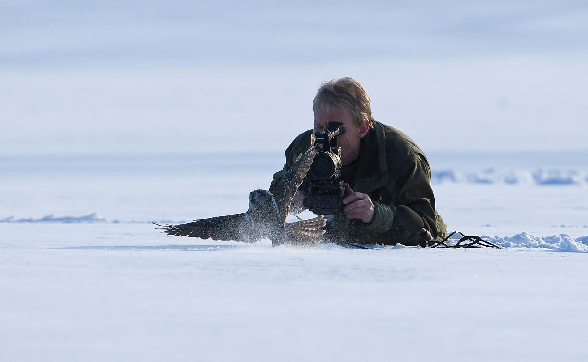

A unique collection of broadcast-quality bird footage, curated by veteran wildlife photographer Johnny Steen and validated by Dr. Ronny Steen, Associate Professor of Behavioural Ecology at The Norwegian University of Life Sciences.
Explore the Archive
Our Story: For over four decades, Johnny Steen has meticulously documented the rich avian life of Norway, contributing to several productions for Norway's national broadcaster, NRK ("Ut i naturen"). His extensive archive represents a lifetime of patience and dedication.
This unparalleled cinematic library is now uniquely paired with the scientific insight of his son, Dr. Ronny Steen. As an Associate Professor in Behavioural Ecology at the Norwegian University of Life Sciences (NMBU) with a Ph.D. in raptor studies, Dr. Steen brings a layer of scientific accuracy and narrative depth to the footage.
Together, we offer more than just footage; we provide scientifically-grounded visual stories, ensuring every clip is not only visually stunning but also contextually accurate.
Search for species or browse the taxonomical list to discover our collection. The archive is continuously updated with new footage.
For inquiries regarding footage licensing, scientific consultation, or collaborative projects, please contact us directly. We are available to discuss your specific production needs and provide a curated selection of footage for your review.
We look forward to helping you bring the authentic stories of incredible birdlife to the screen.
Your request has been formatted below. You can either copy the text to your clipboard and paste it, or click 'Send Email' to open your email client with the request pre-filled to us at kestrel1978@gmail.com.